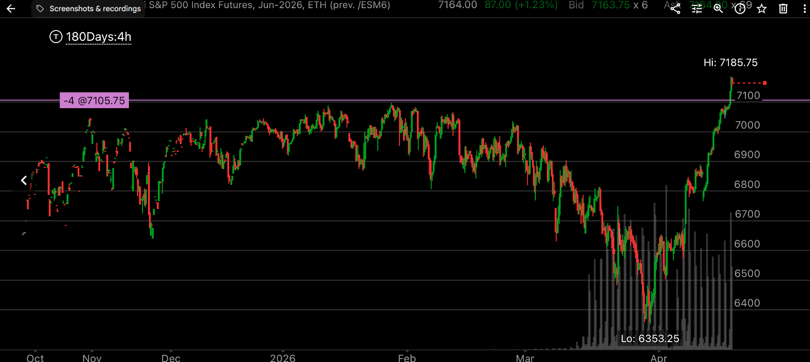
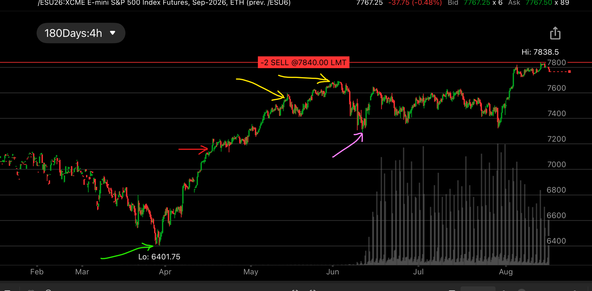

多日连续上涨，形成加速走势，但是因为高点出现继续前进的走势，并没有反转
- 从低点连续多日上涨，形成加速走势，这个走势很大
- 因为很大，需要等待足够的时间，它在这段时间里面出现了没有加速的相对弱势，导致继续上涨。

图示:
- 连续多日上涨，但是因为前面下跌的时候，持续时间更久，所以形成了加速走势。
- 按照规则，应该等够足够的时间，才能反转，然而这段时间内，它出现没有加速的相对弱势，说明它会继续前进。参考下面的链接
- 相对弱势后，两段走势，第二段是两次加速

图示:
- 绿色和红色箭头，是从低点创新高的加速过程，用时12天。
- 两个黄色箭头，是相对弱势。让它大跌，但是未来还会上涨。
- 紫色箭头，是两次向下加速的走势。形成底部。然后创新高。